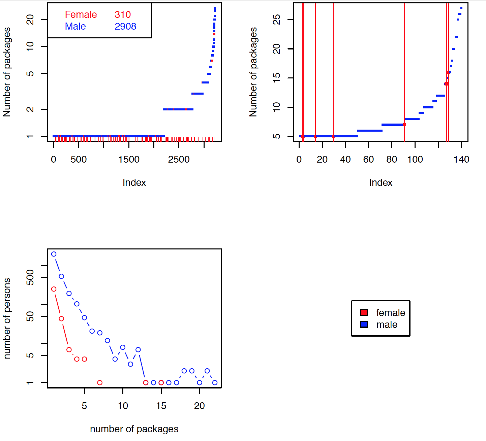

heR Panel Discussion
Moderator: Stephanie A. Kovalchik
Panelist Introductions
- Gabriela Queiroz
- Heather Turner
- Karline Soetaert
- Amelia Mcnamara
- Vivian Zhang
Why the "heR Panel"?
R's Gender Gap

Gender Gap Study Source Code
Package Maintainers

Contributed by Karline Soetaert, Source Code
As women R programmers we are an exception. How did we get here?
Why is there a higher percentage of women in statistical fields than the percentage active in the R community?
What do we love about R?
Are there challenges that come with being female and a statistical programmer? What are they?
Why aren't more women contributing R packages?
Are barriers to development different than barriers to use?
Are we ever treated differently by other useRs for being female?
How and in which occasions?
What could be done to increase the representation of women in the R community?
What could be done to encourage more women to contribute R packages?
What efforts are underway?
Can we achieve greater gender equality by simply leaning in or is institutional change needed?
Do events focusing on women help or harm the gender gap?
What are the benefits of narrowing R's gender gap?
Audience Questions